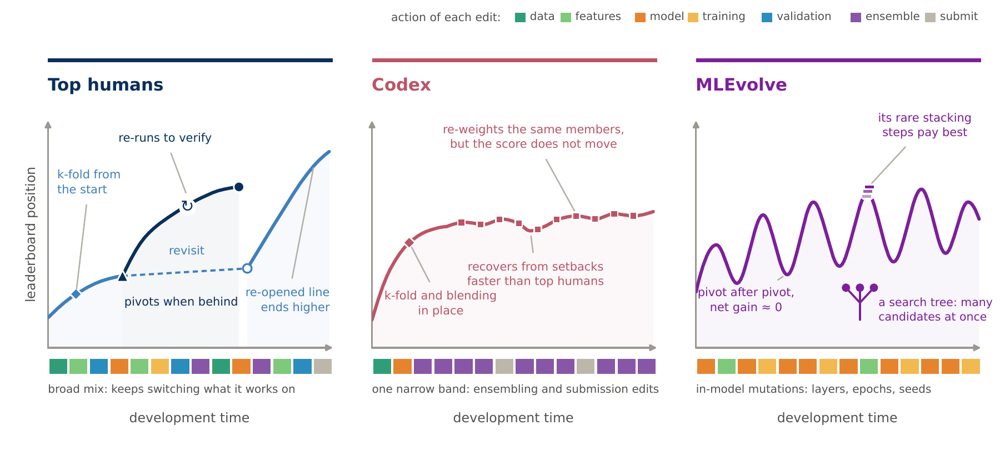
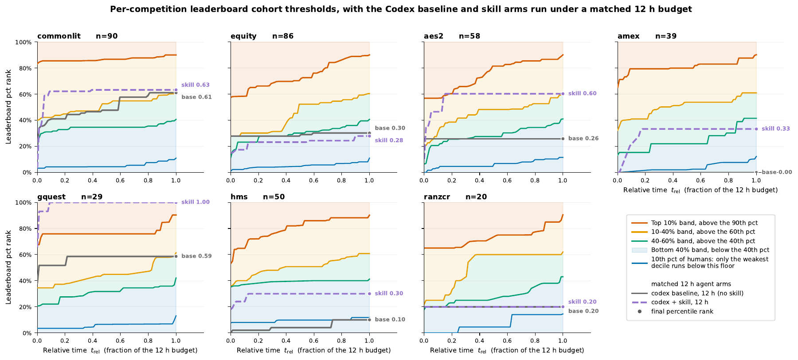
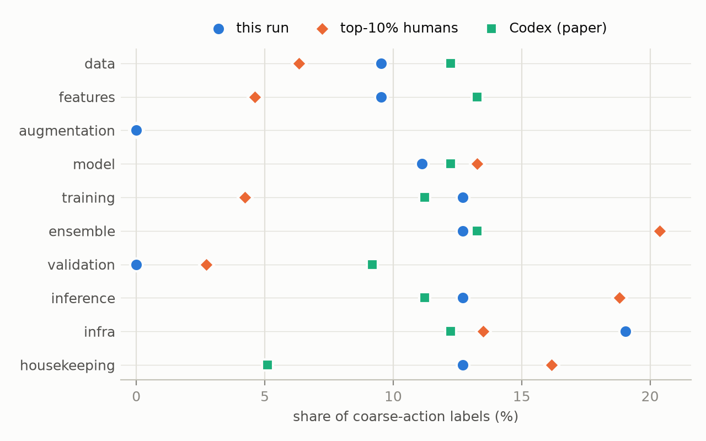
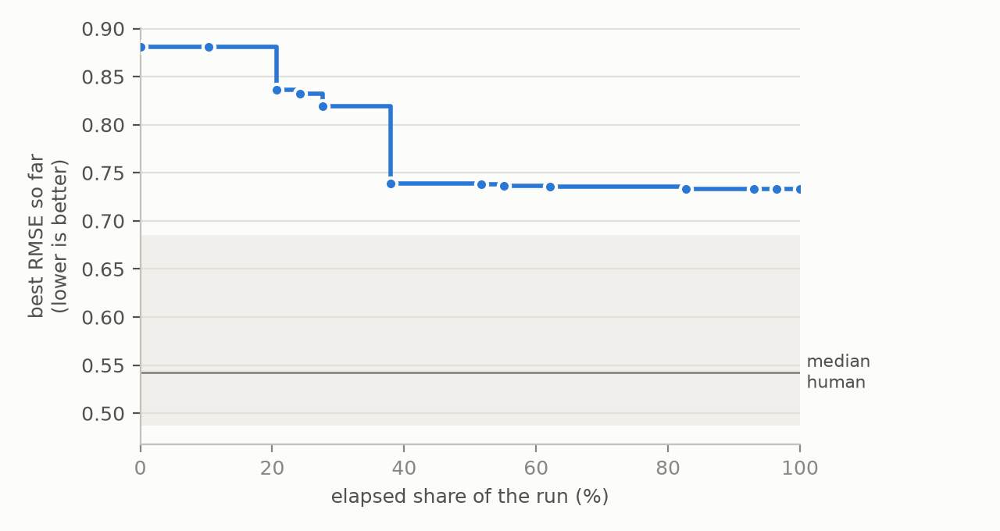

Dataset · Analysis · Toolkit
TraceML
An Empirical Analysis of Human-Agent Planning in Machine Learning Development
Carnegie Mellon University
arXiv:2608.26086, August 2026 · COLM 2026 Workshop on Agent Behavior
In short
- Benchmarks such as MLE-bench grade the final submission and discard the development process behind it. TraceML keeps that process: every code version of a run, with its score, what it contains, and what each edit did and why.
- It holds 4,465 human Kaggle trajectories on 134 competitions. On seven of them, 430 human and 207 agent trajectories (Codex CLI and MLEvolve) are paired under one schema.
- Experts alternate data work, validation, model changes and ensembling, and return to approaches they had set aside. Each agent collapses into a narrow loop and neither pivots at the human rate nor reopens abandoned work.
- A planning prompt of about 1,000 tokens distilled from human practice moves the behaviors it names and lifts scores on five of seven competitions. The agent's effort profile stays agent-shaped.

What TraceML records
A human leaves a public Kaggle notebook history built up over weeks. An agent leaves a git working directory or a tree-search journal produced in hours. TraceML maps both onto one representation: an ordered sequence of code versions, each with its leaderboard score and timestamp. Every agent version is re-graded with the held-out MLE-bench evaluator, not only the final submission.
Each version is labeled with the ML-pipeline stages it contains (8 coarse and 136 fine tags). Each transition between versions is labeled with the actions it performs (10 coarse and 85 fine tags), its intent (6 classes), the size of the edit, and its effect on the score. Two distilled Qwen3-1.7B labelers, trained on schema-constrained labels from a larger GPT teacher model, make labeling all 151,088 versions feasible.
![Pipeline in four stages. Raw traces from Meta Kaggle notebooks, Codex git commits and MLEvolve search branches are extracted into one unified version record (code, score, time, trajectory and version ids). A state labeler outputs 8 coarse and 136 fine tags per version; an action and intent labeler reads the code diff and both states and outputs 10 coarse and 85 fine action tags, 6 intent classes and the score effect. Released artifacts are state and action parquet tables, schemas and prompts, and the Qwen labeler checkpoints.](figures/fig2-pipeline.png)
Findings
All comparisons use the paired subset: seven competitions, a twelve-hour agent budget, and gpt-5.4-mini behind both scaffolds. Humans are not budget-matched and cannot be, so they serve as a reference distribution of public practice rather than a control.
Each agent collapses into a narrow loop
At the level of coarse actions the separation is partial. MLEvolve's best branches sit 0.09 to 0.12 bits from every human cohort, while Codex sits about as close to top humans as the human cohorts sit to each other. Fine-grained actions separate what the coarse mix does not. Codex works around the submission: it re-weights ensembles, stacks models, adds members and tweaks post-processing at several times the human rate. MLEvolve mutates its model in place by averaging seeds, editing layers and changing epoch counts. Neither changes or checks direction: swapping a checkpoint, swapping a pretrained source and re-running unchanged code to verify a result all stay an order of magnitude below the human rate.
![Four panels. (a) PCA of per-trajectory coarse-action mixes: human cohorts overlap on the left, MLEvolve sits to the right, Codex near top humans. (b) Pairwise Jensen-Shannon divergence: 0.02 between Codex and top-10% humans, 0.09 to 0.12 between MLEvolve-best and every human cohort. (c) Radar plot of coarse-action profiles. (d) Fine-action usage relative to pooled humans: an MLEvolve loop of edit layers, change epochs and average seeds; a Codex loop of stack models, tweak post-processing, add member and re-weight ensemble; and a shared gap where both rarely swap checkpoints, swap pretrained sources or re-run to check.](figures/fig3-action-profiles.png)
Agents pivot too little or too much
A pivot is an edit that changes the backbone, the representation, the objective or the validation scheme. Codex and MLEvolve miss the human rate from opposite sides. The gap survives holding the code state fixed: matched to human versions in the same state, Codex is still out-pivoted three to one.
Share of transitions that pivot
Paired subset; the gray bar and the vertical line mark the human rate.
Frequent pivots are not good pivots. Coding each of the three steps after a pivot as improving (+1) or regressing (−1), matched humans average +0.089 and MLEvolve −0.008. Codex rarely turns; MLEvolve turns without gain.
Agents recover scores but not abandoned approaches
A version returns when it resembles an earlier, non-adjacent version of its own trajectory more than its predecessor, with something dissimilar in between. Top humans do this routinely, and it pays. The agents effectively never do, although Codex climbs back from score setbacks more often than top humans.
What the agents lack is memory, not recovery. Tuning forward to regain a score and returning to an earlier approach are different capabilities, and the agents have only the first. Together with the pivot result this describes a search without memory: from a given state the agent does not turn, and it does not go back.
Agents ensemble in name only
All three cohorts ensemble, but 78% of Codex's ensemble edits re-weight a member set it never grows, MLEvolve mostly averages seeds, and top humans put the largest share into adding a new member. For humans, an ensemble step that adds or changes a member raises the chance that the next version improves by 6.4 points, and one that only re-weights lowers it by 5.8 points. For Codex neither kind moves it. A checklist that only asks whether the agent ensembles would rank Codex above the top human cohort while its ensemble work does nothing. Edit size tells the same story: humans span the range, while Codex edits small and pays in steps and MLEvolve edits large and pays in waste.
A planning prompt closes only the part of the gap that reduces to instructions
The findings name specific behaviors, so the paper tests whether naming them in a prompt changes them. The skill is about 1,000 tokens: anti-loop constraints, human-prior practices (K-fold from the first version, an early ensemble, cached out-of-fold predictions, multi-model blending), periodic self-checks, and task-specific priors. Codex CLI receives it at the start of a 12-hour run and again every 30 minutes; the backend, tools, extraction pipeline and grader stay fixed.
Three behaviors move onto the top-human value: re-weighting falls roughly fivefold, small early edits rise from near zero to above the top human rate, and ensembling attention lands on the human value. Where the prompt misses, it misses in two ways. It overshoots what it forbids: the plain hold-out drops to zero, below the quarter of states where top humans still use one. And it saturates on what it prescribes: Codex already ran K-fold averaging and kept out-of-fold predictions at or above human rates.
![Six bar charts comparing top-10% humans, top 10-40% humans, MLEvolve, Codex without the harness and Codex with the skill. Moving toward humans: re-weight ensemble falls from 50% to 11% of transitions (top humans 8.9%), ensembling attention from 26% to 21% of tag mass (top humans 21%), small early edits rise from 5.6% to 61% (top humans 43%). Missing: plain hold-out falls from 10% to 0% of states (top humans 24%), K-fold averaging 57% to 59% (top humans 51%), out-of-fold prediction 79% to 83% (top humans 33%).](figures/fig4-harness-scorecard.png)
Scores improve, and the content is what does it. Five of the seven competitions improve, two are within noise, and none regress. An ablation that keeps the 30-minute re-injection schedule but removes the planning content lands at or below the baseline everywhere, so the gain comes from what the skill says rather than how often it is repeated. A practice transfers when the instruction names a level the agent has not already passed; a prohibition gives a direction with no destination.

The prompt is more useful as a probe than as a fix. It marks the boundary between what instruction can reach and what it cannot. The two remaining gaps look like design problems: memory (search over the run's own earlier states) and control (a policy that reads where the run stands before deciding to turn).
Analyze your own agent
The pipeline that built the agent side of TraceML is released as a command-line tool. Point it at a finished run and it extracts every distinct code state, labels states and transitions with the released labelers, writes tables in the dataset's schema, and reports the run's behavior against the human cohorts of the same competition. It has been applied to Codex CLI, MLEvolve, AIDE, Claude Code and Gemini CLI runs. On the paper's own regression run it reproduces the released version count (16 code states from 2,505 grader calls) and the released state labels exactly.
# install; labeling runs vLLM on one CUDA GPU
pip install "traceml-toolkit[label] @ git+https://github.com/JerryYan123/TraceML"
# 1. record a CLI agent on an MLE-bench competition
traceml record runs/my_run --slug commonlitreadabilityprize \
--minutes 60 --harness my-agent -- my-agent-cli --prompt {PROMPT}
# 2. extract, label and report in one command
traceml analyze runs/my_run
# 3. the report is traceml_out/my_run/report.mdThe labelers download on first use. AIDE and MLEvolve search journals, and any git workspace that commits submission.csv, can be analyzed without recording.
Without a GPU, traceml analyze --skip-label still extracts the trajectory and places its score against the human cohort, and traceml from-released <key_id> turns any trajectory of the dataset into the same report.
Example: a one-hour Claude Code run
Claude Code with the claude-haiku-4.5 backend, recorded for one hour on CommonLit Readability. Its 14 grader calls collapse into 13 distinct code states. The best RMSE, 0.733, is better than 20% of the 103 human trajectories on this competition, each counted at its best score. Against top-10% humans on the same competition it spends fewer of its edits on ensembling (13% of action labels against 20%), none on validation, and more on training and infrastructure. Eleven of its twelve transitions are optimization; none are debugging or verification, which make up 12% and 6% of top-human transitions.


The paper's appendix describes this run as above 52% of the human cohort, with 36% exploration. That percentile ranked each human by their worst submission on lower-is-better metrics, and one transition went unlabeled. The released toolkit ranks humans by their best score and labels every transition with complete prompt inputs, which gives 20% and 8%.
Data and code
| Release | Contents |
|---|---|
| Dataset | State and action tables for three splits (paired, humans-only, the harness experiment), schemas and prompts, both labeler checkpoints, raw agent trajectories, and the dataset-building pipeline. |
| Toolkit | The traceml command-line tool described above, with examples and tests. |
| Paper | Full method, reliability checks, robustness analyses and the complete planning prompt. |
from datasets import load_dataset
# one row per code version, and one row per transition
state = load_dataset("jerryyan/TraceML", "state", split="paired").to_pandas()
action = load_dataset("jerryyan/TraceML", "action", split="paired").to_pandas()Annotations, schemas and dataset code are CC BY 4.0. The toolkit is Apache-2.0. The labeler weights inherit Apache-2.0 from Qwen3. Kaggle competition data is not redistributed, and human notebooks are included only under permissive licenses.
Caveats
- Human trajectories come from public notebook histories, which record saved versions, not all work. Humans also work over weeks with different tooling, so they are a reference distribution, not a budget-matched control.
- Intent labels are inferred from code changes, not observed, and are used only at a coarse level together with actions, timing and scores.
- Agent results cover two scaffolds on one backend model and seven competitions. More harnesses and non-Kaggle workflows would reduce platform-specific bias.
Citation
@article{yan2026traceml,
title = {TraceML: An Empirical Analysis of Human-Agent Planning in Machine Learning Development},
author = {Yan, Jiarui and Sun, Weiwei and Li, Sijie and Li, Wenhan and Yang, Yiming},
journal = {arXiv preprint arXiv:2608.26086},
year = {2026}
}